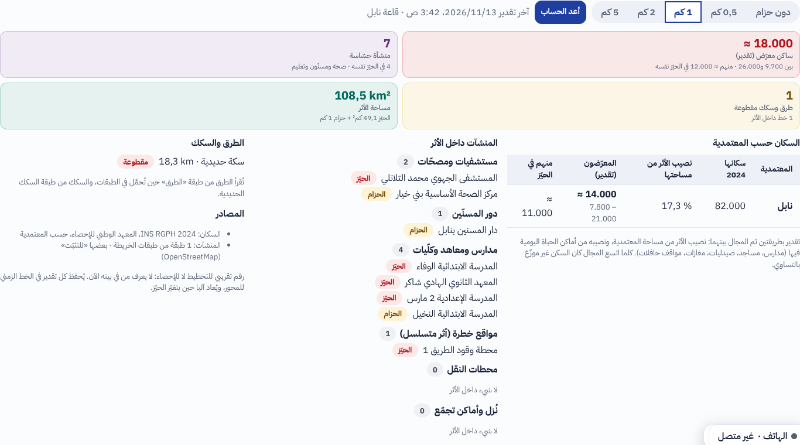
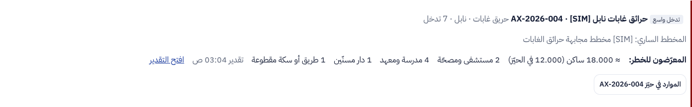
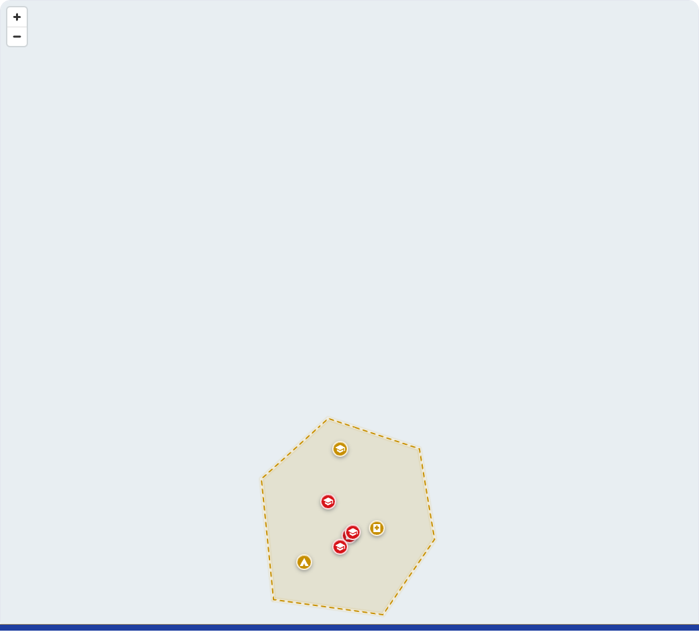

ء-حماية e-Himaya
تقرير المرحلة OS14: السكان والمنشآت المعرّضون للخطر، مدمجة في محور الأزمة ونافذة القرار والخريطة التفاعلية
1. ما أُنجز
- دون تكرار: لا صفحة جديدة ولا مدخل جديد في القائمة. الأثر هو حيّز محور الأزمة القائم (المحور ومحاوره الفرعية)، فلا يُرسم الخطر مرتين: مساحة الفيضان، انتشار النار، دائرة تسرّب الغاز كلها حيّز المحور. حُذف مدخل
/exposure المخطّط من القائمة.
- تبويب «المعرّضون للخطر» في المحور: حزام حول الحيّز تختاره القاعة (دون حزام، 0,5، 1، 2، 5 كم، والافتراضي حسب نوع المحور)، ثم «احسب» أو «أعد الحساب». يعرض: الساكنين المعرّضين بمجال تقدير، المنشآت الحساسة، الطرق والسكك المقطوعة، مساحة الأثر، السكان حسب المعتمدية، المنشآت داخل الأثر حسب الصنف مع «الحيّز» أو «الحزام»، والمصادر.
- خريطة المحور: طبقة خاصة بالحزام والمنشآت الحساسة، تُكشف وتُسحب كبقية طبقات المحور.
- نافذة القرار: سطر تحت كل محور مفتوح فيه الأرقام المختصرة ورابط «افتح التقدير».
- الخريطة التفاعلية: طبقة اختيارية «المعرّضون للخطر» مطفأة افتراضيا، تُكشف أو تُسحب حسب الاختيار، تقرأ آخر تقدير لكل محور مفتوح يراه المستعمل.
- سجل: كل تقدير حدث في الخط الزمني للمحور بأرقامه المختصرة، ويُسجَّل في سجل التدقيق. إذا تغيّر حيّز المحور يُعاد الحساب آليا بالحزام نفسه.
رقم تقريبي للتخطيط لا للإحصاء: السكان من تعداد المعهد الوطني للإحصاء 2024 حسب المعتمدية، موزّعين بين نصيب المساحة ونصيب أماكن الحياة اليومية، فيظهر مجال لا رقم واحد. المنشآت من طبقات الخريطة (OpenStreetMap وما حمّلته القاعات)، وبعضها «للتثبّت».
2. لقطات من المنظومة
تبويب «المعرّضون للخطر» في محور الأزمة

السطر في نافذة القرار

الطبقة الاختيارية على الخريطة التفاعلية: الحزام والمنشآت (الأحمر في الحيّز، الأصفر في الحزام)

3. الصلاحيات
| العمل | من | الزر |
|---|
| قراءة التقدير (التبويب، سطر النافذة، طبقة الخريطة) | كل من يقرأ المحور؛ اسم من حسب يظهر للقاعات فقط | axes |
| الحساب وإعادة الحساب | القاعات التي تدير المحور، ما دام مفتوحا | axes.exposure |
4. الاختبارات
- الخادم:
tests/test_crisis_exposure.py (4 اختبارات: مجال التقدير، إزالة المكرر والأصناف، الحساب والسجل والصلاحيات والقراء وإعادة الحساب عند تغيّر الحيّز ونافذة القرار وطبقة الخريطة، المحور دون حيّز). ruff وmypy نظيفان، وواجهة البرمجة والمخطط محدّثان.
- اللوحة: 734 اختبارا ناجحا، وفحص الأنواع والتدقيق نظيفان. المتصفح:
e2e/phase-os14.spec.ts (3 اختبارات، منها هذه اللقطات).
- إصلاح جانبي: مساحة تُضاف إلى الخريطة التفاعلية أثناء تحميل علاماتها لم تكن تُرسم؛ صارت تُرسم.
5. ما بقي
- طبقة الطرق في الخريطة لحساب الطرق المقطوعة (السكك تُحسب اليوم) (OS14-1).
- سكان على شبكة أدق من المعتمدية (OS14-2)، وأثر خطر مقترح آليا من التنبؤ أو نوع المادة (OS14-3).
الوثائق الخمس الكبرى تُحدَّث معا في نهاية المرحلة كما في docs/phase-end.md.